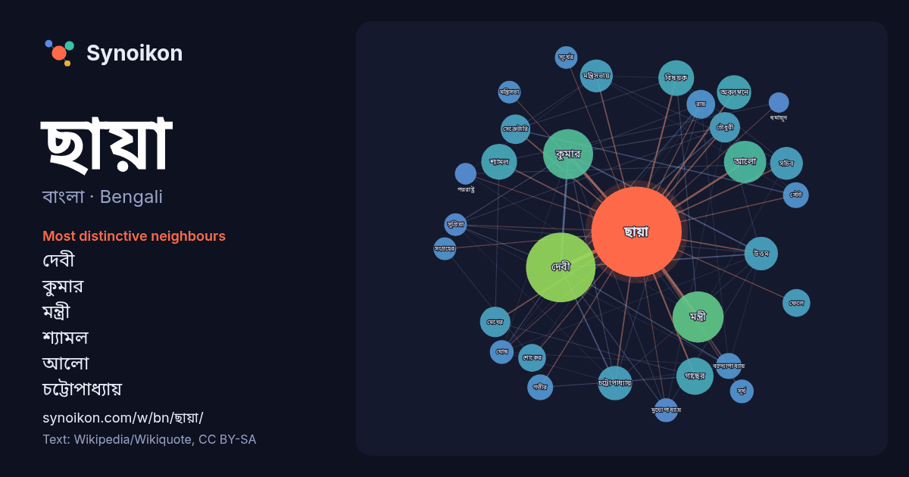

বাংলা · Bengali · word of the day list
ছায়া
“shadow” · The words found around it in 900 instances from Bengali Wikipedia, Wikiquote.

Most distinctive neighbours
- দেবী 49×
- কুমার 32×
- মন্ত্রী 30×
- শ্যামল 24×
- আলো 24×
- চট্টোপাধ্যায় 21×
- মন্ত্রিসভায় 20×
- উত্তম 19×
- মেঘের 18×
- অবলম্বনে 17×
- গাছের 17×
- সেক্রেটারি 16×
- সচিব 16×
- শোকের 15×
- বিষয়ক 14×
- বন্দ্যোপাধ্যায় 12×
- সুপ্রিয়া 11×
- চৌধুরী 11×
- মুখোপাধ্যায় 10×
- মন্ত্রিসভা 10×
× = how many times more often than in general Bengali Wikipedia text.
Most frequent neighbours
- দেবী 94
- মন্ত্রী 51
- কুমার 49
- আলো 35
- গাছের 27
- বিষয়ক 25
- শ্যামল 25
- অবলম্বনে 23
- চট্টোপাধ্যায় 23
- উত্তম 22
- সময় 22
- অভিনয় 21
- মন্ত্রিসভায় 21
- সচিব 21
- দায়িত্ব 20
- অফ 19
- একজন 19
- চৌধুরী 18
- নিযুক্ত 18
- মেঘের 18
In context
- ছায়া হল একটি অন্ধকার স্থান যেখানে আলোর উত্স থেকে উৎপাদিত আলো একটি বস্তু দ্বারা অবরুদ্ধ হয় এবং এটি সামনে আলোসহ একটি বস্তুর পিছনে সমস্ত ত্রিমাত্রিক আয়তন Wikipedia snippets · ছায়া
- শ্যামল ছায়া (ইংরেজি) ইন্টারনেট মুভি ডেটাবেজে শ্যামল ছায়া (ইংরেজি) টিসিএম চলচ্চিত্র ডেটাবেজে শ্যামল ছায়া ব্রিটিশ ফিল্ম ইনস্টিটিউটে শ্যামল ছায়া (ইংরেজি) Wikipedia snippets · শ্যামল ছায়া
- বিপরীতে একজন ছায়া মন্ত্রিসভার সদস্য থাকেন যিনি সরকারী মন্ত্রীর কাজকে বিশ্লেষণ করেন এবং প্রয়োজনে বিকল্প পথ তুলে ধরেন। অধিকাংশ দেশে ছায়া মন্ত্রিসভার সদস্যকে Wikipedia snippets · ছায়া মন্ত্রিসভা
- ছায়া দেবী (ছায়া চট্টোপাধ্যায়) (ইংরেজি: Chhaya Debi Chattopadhyay; ৩ জুন ১৯১৯ - ২৫ এপ্রিল ২০০১) একজন প্রতিভাময়ী ভারতীয় চলচ্চিত্র অভিনেত্রী। ছায়া Wikipedia snippets · ছায়া দেবী
- ছায়া দোলই হলেন একজন ভারতীয় রাজনীতিবিদ, যিনি সর্বভারতীয় তৃণমূল কংগ্রেসের রাজনীতির সাথে যুক্ত। তিনি ২০১১ সাল থেকে ২০২১ সাল পর্যন্ত পশ্চিমবঙ্গ বিধানসভায় Wikipedia snippets · ছায়া দোলই
- আলো মেধাবী ও ছায়া তা নয়। তাই ছায়ার বাবা অলকেন্দু এক চক্রান্ত করে, যেখানে, তারা বাহিরের জগতে নাম বদল করে চলে এবং আলোর কাজগুলোর জন্য ছায়া প্রশংসিত হয়। Wikipedia snippets · আলো ছায়া
- আনুষ্ঠানিক নির্বাচিত সরকার এই ছায়া সরকারের অনুগত হয় যেখানে এই ছায়া সরকার সকল নির্বাহী ক্ষমতার অধিকারী হয়। ছায়া সরকার তত্ত্ব প্রায়ই প্রস্তাব করে Wikipedia snippets · ছায়া সরকার (ষড়যন্ত্রতত্ত্ব)
- সূর্যের প্রথম সহধর্মিণী সরণ্যুর (সঞ্জনা) ছায়ামূর্তি বা প্রতিফলন। ছায়া সঞ্জনার ছায়া থেকে জন্মগ্রহণ করেন এবং সঞ্জনাকে তার বাড়িতে প্রতিস্থাপন করেন, পরে Wikipedia snippets · ছায়া (দেবী)
More Bengali words
- অরণ্য
- আয়না
- ইতিহাস
- ঈশ্বর
- কাজ
- কুকুর
- ক্ষমতা
- খাদ্য
- গান
- গ্রীষ্ম
- ঘড়ি
- ঘণ্টা
- ঘোড়া
- জননী
- জলবায়ু
- জীবন
- ঝড়
- টাকা
- ট্রেন
- দারুচিনি
- দ্বীপ
- নক্ষত্র
- নীরবতা
- পরিবার
- পানি
- পাহাড়
- প্রকৃতি
- বাগান
- বিজ্ঞান
- বিড়াল
- বৃষ্টি
- ভাষা
- মধু
- মরুভূমি
- মানচিত্র
- মৃত্যু
- রাস্তা
- রুটি
- লবণ
- শরৎ
- শহর
- শিল্প
- শীত
- সত্য
- সময়
- সেতু
- সোনা
- স্বাস্থ্য
- হৃদয়
Precomputed on 2026-10-09 with default settings (±5 words, medium corpus). The interactive map can refresh it with live data.